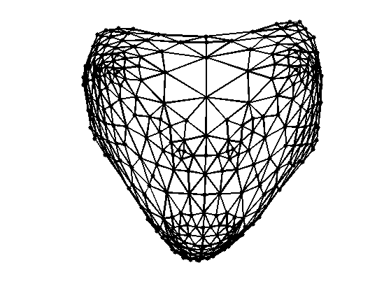
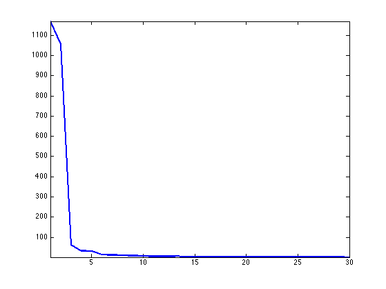
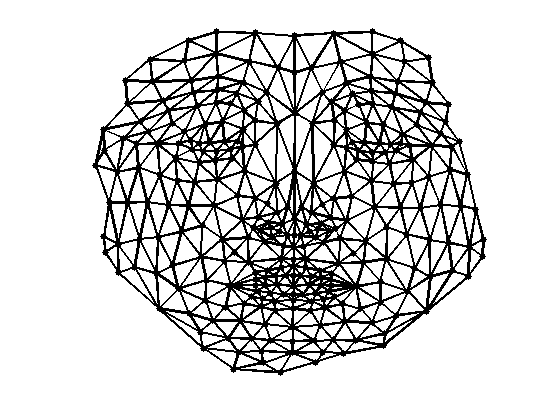
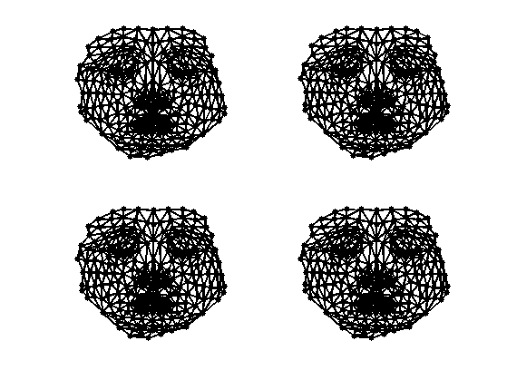
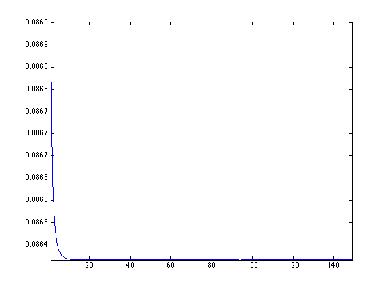
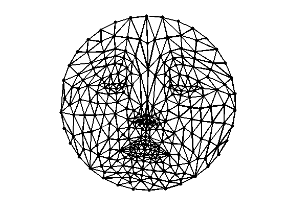

Spectral Mesh Flattening
This tour explores 2D flattening of 3D surfaces using spectral methods.
Contents
Installing toolboxes and setting up the path.
You need to download the following files: signal toolbox, general toolbox and graph toolbox.
You need to unzip these toolboxes in your working directory, so that you have toolbox_signal, toolbox_general and toolbox_graph in your directory.
For Scilab user: you must replace the Matlab comment '%' by its Scilab counterpart '//'.
Recommandation: You should create a text file named for instance numericaltour.sce (in Scilab) or numericaltour.m (in Matlab) to write all the Scilab/Matlab command you want to execute. Then, simply run exec('numericaltour.sce'); (in Scilab) or numericaltour; (in Matlab) to run the commands.
Execute this line only if you are using Matlab.
getd = @(p)path(p,path); % scilab users must *not* execute this
Then you can add the toolboxes to the path.
getd('toolbox_signal/'); getd('toolbox_general/'); getd('toolbox_graph/');
Spectral Mesh Flattening
Mesh flattening finds 2D locations that minimize a variational energy with a non-degenracy constraint (for instance maximal variance).
For the Dirichlet energy (Sobolev norm), the resulting location are described by the first eigenvectors of the Laplacian.
This method is refered to as "Laplacian eigenmaps" in manifold learning, see:
The advantage over fixed boundary harmonic parameterization is that the boundary of the flattened domain is not fixed, but the drawback is that the parameterization is not guaranteed to be valid (bijective).
First load a mesh.
name = 'nefertiti';
options.name = name;
[vertex,faces] = read_mesh(name);
n = size(vertex,2);
Display it.
clf;
plot_mesh(vertex,faces, options);
shading faceted;
Compute the mesh Laplacian matrix.
options.symmetrize = 1;
options.normalize = 0;
L = compute_mesh_laplacian(vertex,faces,'conformal',options);
Compute the eigenvalues and eigenvectors
[U,S] = eig(full(L)); S = diag(S);
[S,I] = sort(S,'ascend'); U = U(:,I);
The vertex positions are the eigenvectors 2 and 3.
vertexF = U(:,2:3)';
Use translation / rotation to align the parameterization.
icenter = 88;
irotate = 154;
vertexF = vertexF - repmat(vertexF(:,icenter), [1 n]);
theta = -pi/2+atan2(vertexF(2,irotate),vertexF(1,irotate));
vertexF = [vertexF(1,:)*cos(theta)+vertexF(2,:)*sin(theta); ...
-vertexF(1,:)*sin(theta)+vertexF(2,:)*cos(theta)];
Display the flattened mesh.
clf; plot_mesh(vertexF,faces);

Exercice 1: (check the solution) Perform the same flattening, but with the combinatorial Laplacian.
exo1;
Geodesic Embedding (Isomap)
Another (nonlinear) embedding can be computed by minimizing the geodesic distortion between points on the surface and points over the parameterized domain.
First we compute the geodesic distance on the mesh using the Fast Marching algorithm.
D = zeros(n); for i=1:n D(:,i) = perform_fast_marching_mesh(vertex,faces,i); end
Enforce symmetry.
D = (D+D')/2;
Compute the centered matrix.
J = eye(n) - ones(n)/n; W = -J*(D.^2)*J;
Diagonalize the centered matrix.
[U,S] = eig(W);
S = diag(S);
[S,I] = sort(S,'descend'); U = U(:,I);
Display the decay of the eigenvalues. If the mesh was isometric to the plane, then only the two largest eigenvalues would be non zero.
clf; hh = plot(S(1:30), '.-'); axis('tight'); set(hh, 'LineWidth', 2);
Isomap embedding is defined from the two largest eigenvalues.
vertexF = U(:,1:2)' .* repmat(sqrt(S(1:2)), [1 n]);
Align the parameters.
vertexF = vertexF - repmat(vertexF(:,icenter), [1 n]);
theta = -pi/2+atan2(vertexF(2,irotate),vertexF(1,irotate));
vertexF = [vertexF(1,:)*cos(theta)+vertexF(2,:)*sin(theta); ...
-vertexF(1,:)*sin(theta)+vertexF(2,:)*cos(theta)];
Display and compare with Laplacian embeddedding.
clf; plot_mesh(vertexF,faces,options);
Exercice 2: (check the solution) Compute the embedding using Stress minimization with SMACOF. See the numerical tours on bending invariants for more details.
exo2;
Plot stress evolution during minimization.
clf; plot(stress(2:end), '.-'); axis('tight');
Exercice 3: (check the solution) Compute mesh parameterization using a circle as boundary.
exo3;